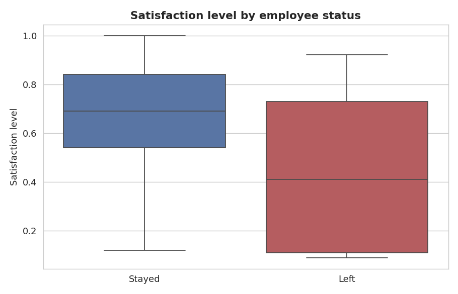
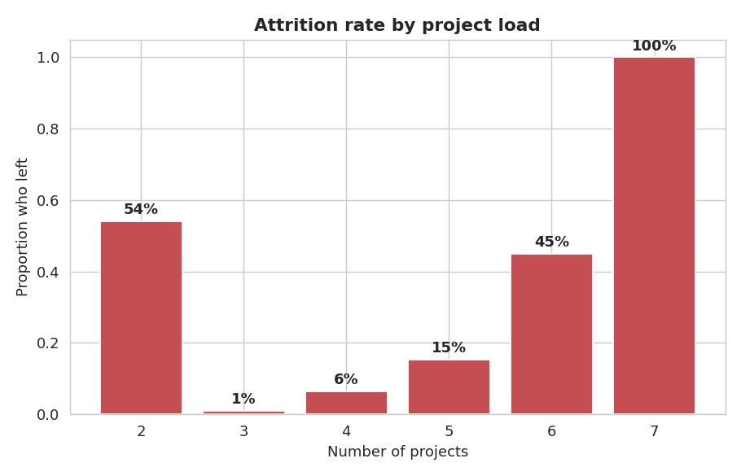
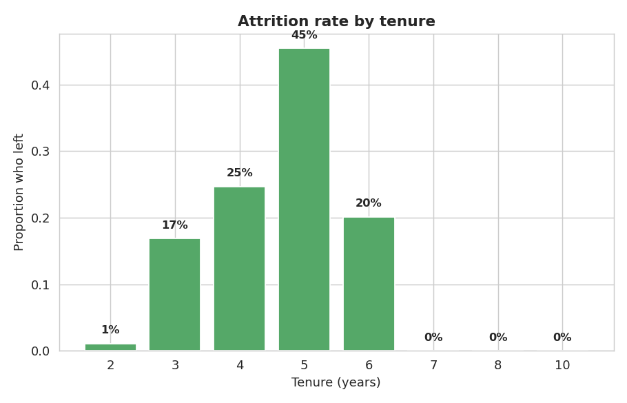
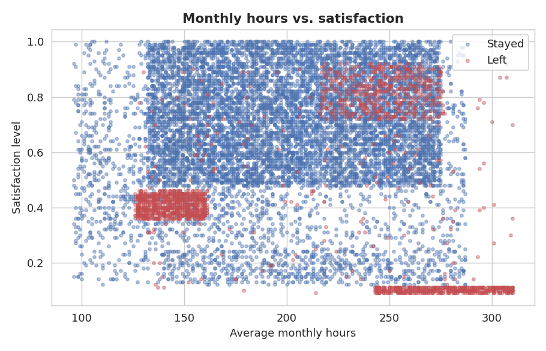
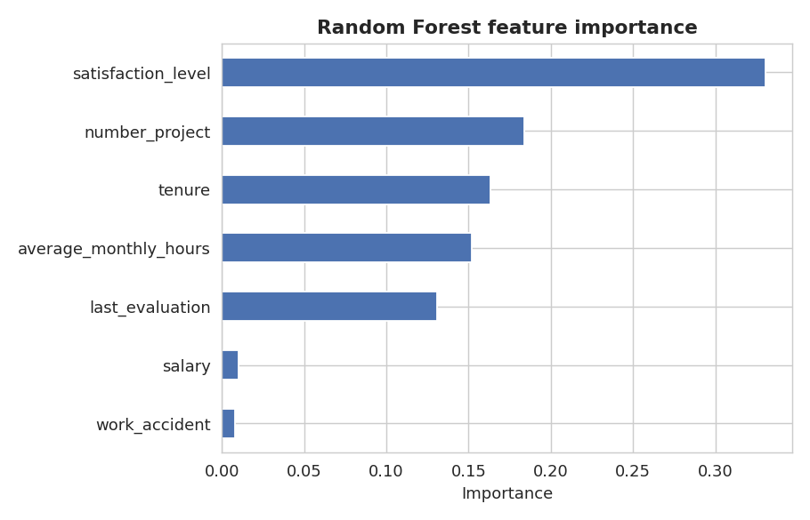

Data source: Salifort Motors HR survey dataset — 14,999 self-reported employee records across 10 attributes
Scope: End-to-end classification project: data cleaning, exploratory data analysis, and three tuned tree-based models predicting employee attrition
Output: A capstone analysis identifying the five key drivers of turnover, plus a deployed predictive model and an executive summary for senior leadership
Salifort Motors, an alternative-energy vehicle manufacturer, faces a costly problem: a high rate of employee turnover. Every departure means money spent again on recruiting, onboarding, and upskilling — and a loss of institutional knowledge. The senior leadership team commissioned an analysis of an internal HR survey to understand why employees leave and to build a model that flags who is at risk before they go.
Business question: Which employee attributes most strongly predict that someone will leave Salifort Motors, and can a model reliably identify at-risk employees so HR can intervene early?
| Step | Stage | Action |
|---|---|---|
| 1. Plan | PACE — Plan | Defined the business question, identified leadership and HR as stakeholders, and set F1 score as the primary success metric given the class imbalance. |
| 2. Clean | Jupyter notebook | Standardized column names, removed 3,008 duplicate rows, and reviewed tenure outliers — deliberately keeping them, since tree models are robust to extreme values. |
| 3. Explore | EDA | Visualized attrition against satisfaction, project load, tenure, monthly hours, and evaluation score using boxplots, bar charts, a scatter plot, and a correlation heatmap. |
| 4. Encode | Feature prep | Mapped salary to an ordinal scale, one-hot encoded department, and split the data into stratified 75/25 train and test sets. |
| 5. Model | Construct | Built and tuned a Decision Tree, Random Forest, and XGBoost model using GridSearchCV with 4-fold cross-validation, optimizing for F1. |
| 6. Evaluate | Execute | Compared all three models on accuracy, precision, recall, F1, and AUC; selected the Random Forest and reviewed its confusion matrix and feature importance. |
| 7. Communicate | Deliverables | Summarized findings and recommendations in a one-page executive summary written for a non-technical leadership audience. |
The clearest divide in the data is satisfaction level. Employees who left reported a median satisfaction of roughly 0.41, against roughly 0.69 for those who stayed. Dissatisfaction is not a minor factor at the margins — it is the single strongest predictor of departure.

Key Insight — Satisfaction is an early-warning metric
Salifort already collects satisfaction scores. The analysis shows those scores carry real predictive weight — the company should act on low scores as they appear, not file them away after the survey closes.
Attrition by project count follows a striking U-shape. Employees with a healthy load of 3–4 projects almost never leave. But attrition climbs to 45% at 6 projects, and every single employee with 7 projects left. A second spike appears at just 2 projects — a different problem, likely disengagement or being managed out.

Key Insight — Two distinct turnover problems
The high end is an overwork problem; the low end is an engagement problem. They need different responses — workload rebalancing for one, re-engagement or role review for the other.
Tenure tells a sharp story. Attrition is near zero for new employees, rises through years 3 and 4, and peaks at 45% at the five-year mark. Then it drops to nothing — not one employee with seven or more years of tenure left. Employees who pass the six-year mark stay.

Key Insight — A predictable intervention point
Because the risk concentrates so tightly around years 4–5, HR has a clear, predictable window for retention check-ins, promotion reviews, and career-path conversations.
Plotting monthly hours against satisfaction and coloring by outcome separates the leavers into distinct groups: one cluster works very long hours at low satisfaction (overworked and unhappy), and another works relatively few hours at moderate satisfaction (disengaged). Employees who stayed occupy the comfortable middle.

After tuning, the Random Forest was selected as the final model: a test F1 of about 0.96, precision near 0.99, and an AUC near 0.98. Its feature-importance ranking independently confirms the EDA — the same five attributes dominate the prediction.

Key Insight — EDA and model agree
When exploratory analysis and the model point to the same five drivers, the conclusion is solid. Leadership can act on these factors with confidence.
| Model | Accuracy | Precision | Recall | F1 | AUC |
|---|---|---|---|---|---|
| Decision Tree | 0.983 | 0.969 | 0.930 | 0.949 | 0.974 |
| Random Forest | 0.986 | 0.991 | 0.926 | 0.957 | 0.980 |
| XGBoost | 0.985 | 0.981 | 0.926 | 0.953 | 0.986 |
All three models performed strongly. The Random Forest was chosen for its top F1 and very high precision — when it flags an employee, it is almost always right, which keeps HR follow-up efficient.
Finding 1 — Dissatisfaction is the dominant driver.
Satisfaction level separates leavers from stayers more cleanly than any other variable. Low scores should trigger action, not just be recorded.
Finding 2 — Overwork and disengagement are separate problems.
Attrition spikes at both 6–7 projects and at 2 projects. The high end needs workload relief; the low end needs re-engagement.
Finding 3 — Risk concentrates at the 4–5 year mark.
Attrition peaks at five years of tenure and vanishes beyond six. This gives HR a precise, predictable window for retention efforts.
Finding 4 — A high-precision model makes intervention practical.
The Random Forest identifies at-risk employees with ~0.99 precision, so HR can focus support on genuinely at-risk people — used as a help signal, never a penalty.
Ethical Note
A model this accurate can be misused. A prediction that an employee may leave should prompt support — a check-in, a workload review, a career conversation — never a pre-emptive penalty. The purpose of the project is earlier, kinder intervention, and the model should be governed accordingly.
Project Note
This project is the capstone of the Google Advanced Data Analytics certificate. The Salifort Motors scenario and dataset are provided by the course; the analysis, modeling decisions, and write-up are my own work.